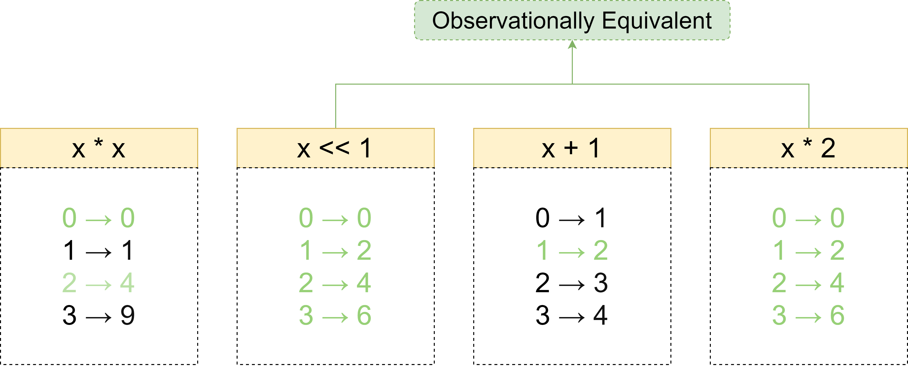
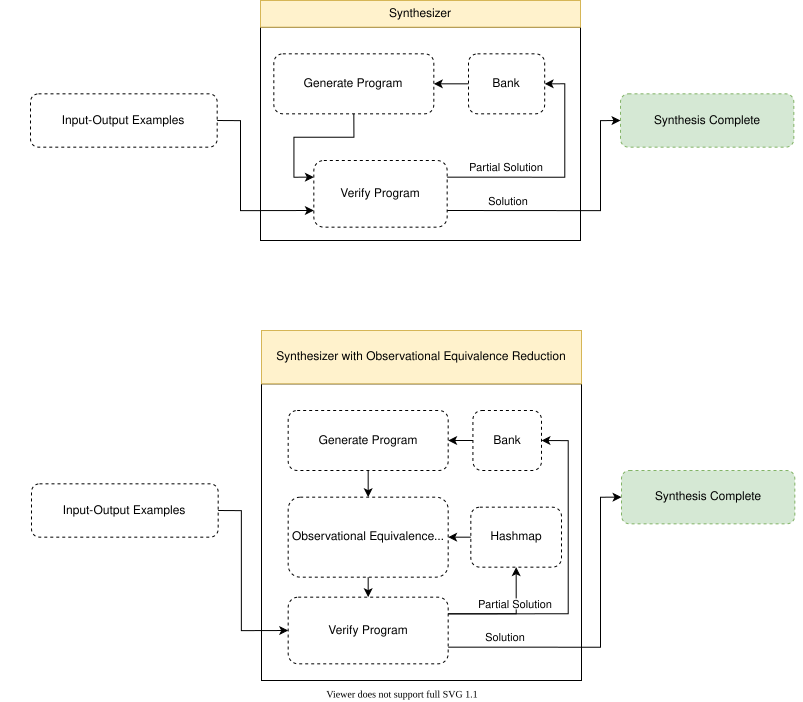
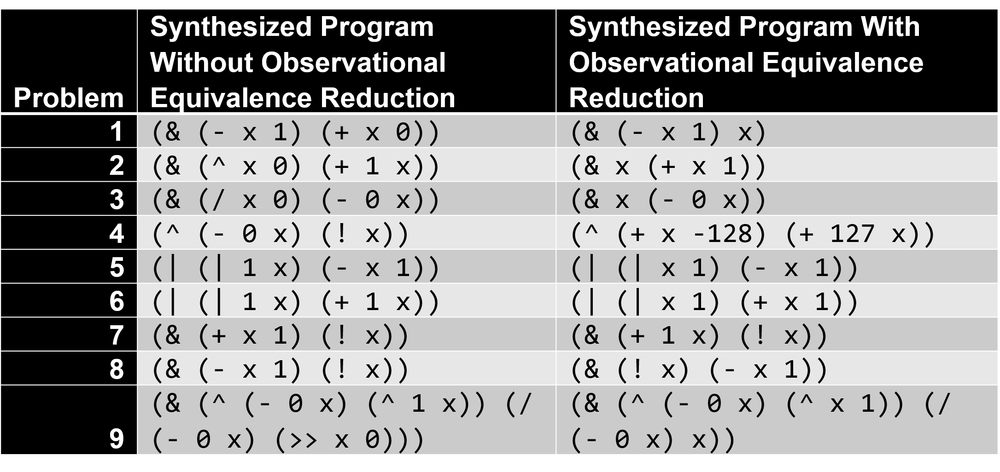
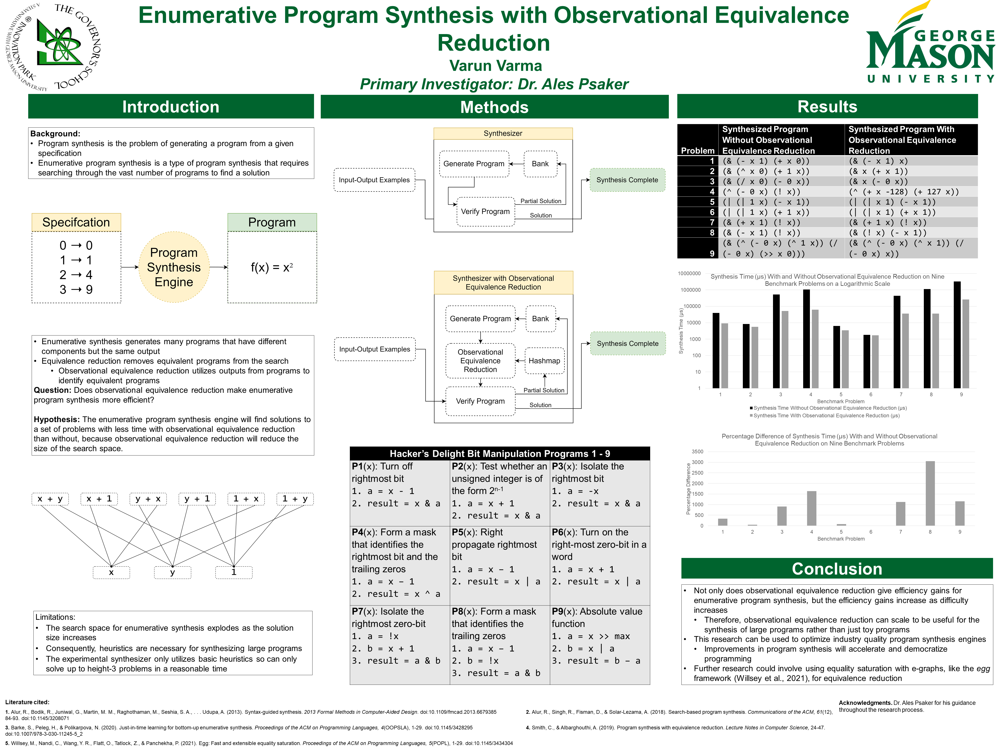

Program synthesis is the problem of generating a program from a given specification. Enumerative program synthesis is a powerful type of program synthesis that iterates through the search space of possible programs to find a solution. The main issue with enumerative program synthesis is that the search space explodes in size for harder synthesis problems. One way of optimizing enumerative synthesis is through equivalence reduction. Enumerative synthesis generates many complete programs that have the same outputs (for example, x + 0 and x). Equivalence reduction identities such equivalent programs and removes them from the search space, which drastically reduces the number of programs that need to be searched. This research project implemented an enumerative synthesis engine that uses observational equivalence reduction, a form of equivalence reduction that compares program outputs to determine equivalence. The synthesis engine takes a set of input-output integer pairs and searches for a program that has the same input-outputs. The synthesizer was tested on a set of nine synthesis problems from the book Hacker’s Delight with observational equivalence reduction enabled and disabled. On all benchmarks, the synthesizer completed synthesis far faster with observational equivalence reduction enabled. Furthermore, observational equivalence reduction gave more percentage efficiency gains the harder the synthesis problem was, which suggests that observational equivalence reduction can scale to be useful for large synthesis programs rather than just toy problems. This research shows that observational equivalence reduction can be used to optimize industry quality program synthesis engines, which will help accelerate and democratize programming.
The research project changed drastically throughout the research process. One can view the changes through these progress reports that were made every two weeks.
Progress Report 1
Figure 1. A diagram demonstrating observational equivalence.
Figure 2. A diagram outlining the enumerative synthesis engine.
Figure 3. The synthesized programs from each of the benchmark problems.
Figure 4. The presentation poster for the research project.